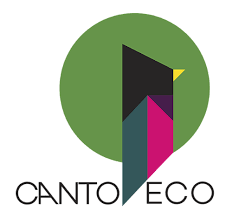

Bem-vindo à Utifacil! Explore nossa seleção de utensílios de cozinha sustentáveis,
projetados para tornar o seu dia a dia na cozinha mais prático e eco-friendly. Nossa missão é oferecer produtos
duráveis, feitos com materiais responsáveis e processos de fabricação éticos. Equipe sua cozinha com utensílios
que cuidam do planeta enquanto você prepara suas refeições favoritas. Faça parte da revolução sustentável com Utifacil.

SITE CANTOECO.COM.BR
Explore a Cantoeco: Descubra uma variedade de utensílios de cozinha que unem funcionalidade
e sustentabilidade. Nossos produtos são cuidadosamente selecionados para oferecer qualidade, durabilidade e um impacto
positivo no meio ambiente. Desde gadgets de cozinha até itens de servir, cada peça é projetada para tornar suas experiências
culinárias mais eco-friendly. Junte-se a nós na jornada para uma cozinha mais verde com a Cantoeco.
SITE WESTWING.COM.BR
Bem-vindo à Westwing! Explore nossa coleção de utensílios para sala que combinam estilo e
sustentabilidade. Cada peça é cuidadosamente selecionada para adicionar um toque e elegância ao seu espaço, ao mesmo
tempo em que respeita o meio ambiente. De decorações a acessórios funcionais, nossa variedade de produtos sustentáveis
é projetada para criar um ambiente acolhedor e eco-friendly em sua sala. Transforme sua casa com os utensílios da Westwing.